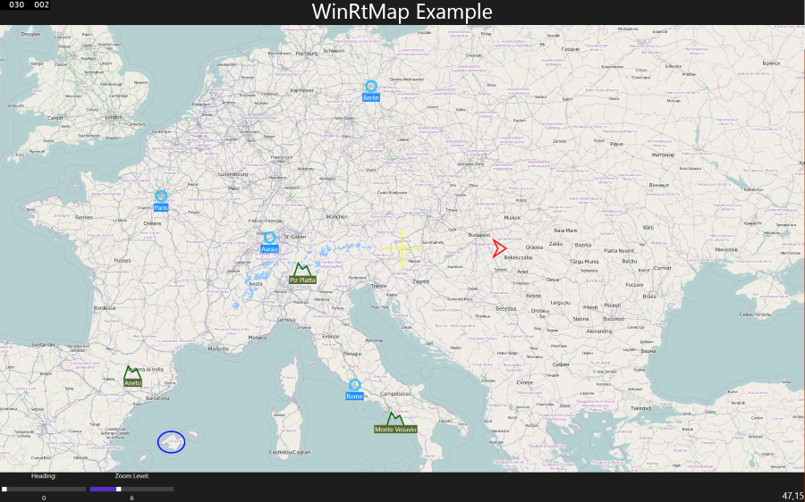

WinRT Map
This Repository contains a Map Control for Windows 8.1 and Windows Phone 8.1. It ist build with extensibility in mind and should be easy to daapt to your needs.
Supported Online-Maps
At the moment only OpenSteetMap is supported out of the box. Lots of other Maps can easily be added (I am happy to accept pull requests for other MapTypes!).
- OpenStreetMaps (http://www.openstreetmap.org/)
Usage
For Eaxmples see the included Demos for Windows 8.1 and Windows Phone (Demo XAML).
<winRtMap:Map Name="map" Background="Transparent" Heading="0" ZoomLevel="4.5" MapCenter="47,15">
<i:Interaction.Behaviors>
<b:TouchMapBehavior />
</i:Interaction.Behaviors>
<tiles:WebTileLayer />
<!-- ItemsControl bound directly to the Model -->
<ItemsControl ItemsSource="{Binding Peaks}">
<ItemsControl.ItemsPanel>
<ItemsPanelTemplate>
<winRtMap:MapItemsPanel />
</ItemsPanelTemplate>
</ItemsControl.ItemsPanel>
<ItemsControl.ItemContainerStyle>
<Style TargetType="ContentPresenter">
<Setter Property="VerticalAlignment" Value="Center" />
<Setter Property="HorizontalAlignment" Value="Center" />
<!-- Binding Helper to allow Binding to the Attached Property 'Location' of the Map -->
<Setter Property="utils:XamlHelper.LocationBinding" Value="PeakLocation" />
</Style>
</ItemsControl.ItemContainerStyle>
<ItemsControl.ItemTemplate>
<DataTemplate>
<Grid>
<Path Stroke="DarkGreen" StrokeThickness="3" winRtMap:MapLayerBase.Location="{Binding MovingTarget}" Margin="20,80,0,0" HorizontalAlignment="Center">
<Path.Data>
<!-- SNIP: Path Data -->
</Path.Data>
</Path>
<Border Background="DarkOliveGreen" Margin="20,80,0,0" Padding="2,2,2,0">
<TextBlock Text="{Binding PeakName}" HorizontalAlignment="Center" VerticalAlignment="Center" FontSize="15" />
</Border>
</Grid>
</DataTemplate>
</ItemsControl.ItemTemplate>
</ItemsControl>
</winRtMap:Map>